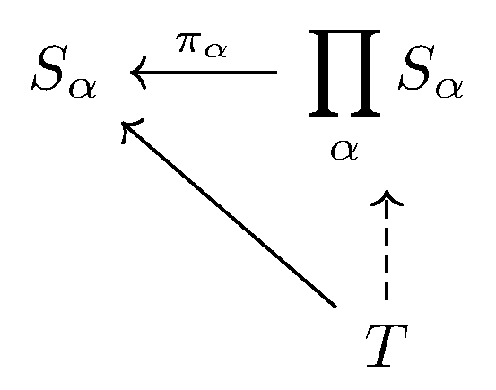
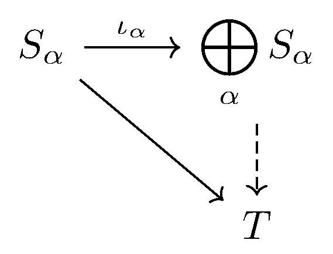

September 18th
Today I learned the categorical definition of the direct sum/coproduct. Essentially, for sets $\{S_\alpha\},$ we define that prod $\prod_\alpha S_\alpha$ with projections $\pi_\alpha:\prod_\alpha S_\alpha\to S_\alpha$ so that any time we have maps $T\to S_\alpha,$ these maps factor uniquely through the $\pi_\alpha.$ In pictures, this diagram commutes.
Then for the direct sum, we just want to reverse the arrows. Namely, we want this diagram to commute.
Formally, we define $\bigoplus_\alpha S_\alpha$ with inclusions $\iota_\alpha:S_\alpha\to\bigoplus_\alpha S_\alpha$ so that any time we have maps $S_\alpha\to T,$ then these maps factor uniquely through $\iota_\alpha.$